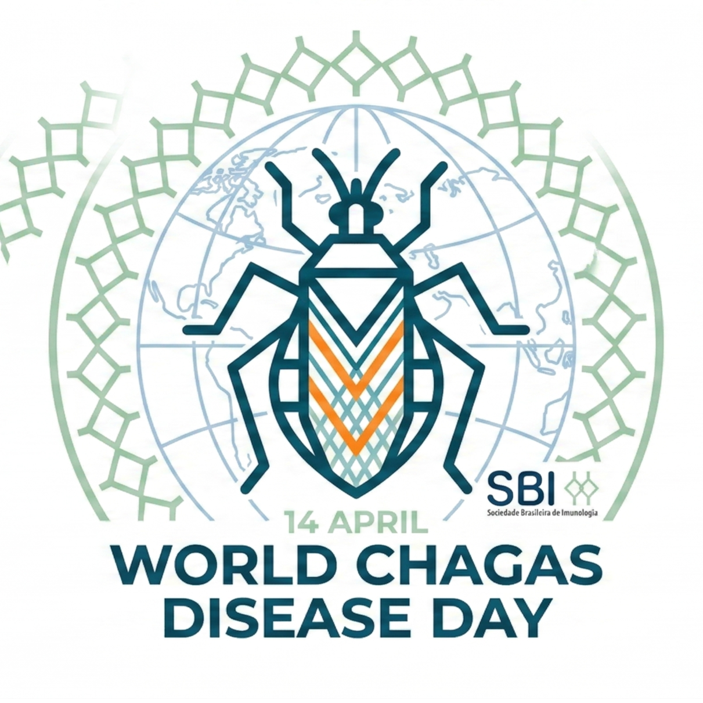

🗓️ April 14, 2026 — World Chagas Disease Day
Mapping Brazilian PhD Researchers in Chagas Disease
An interactive exploration of the scientific production by PhD researchers in Brazil who have published articles on Chagas Disease (Trypanosoma cruzi). Data extracted from the CV Lattes platform — the largest academic curriculum database in Latin America.

PhD Researchers
--
Doctors who published on Chagas
Scientific Articles
--
Unique publications on Chagas
Co-authorship Links
--
Collaboration connections
Data Source
CV Lattes
Brazilian National Research Database
Top Researchers by Publications
Co-authorship Network
≥ 5 publications
Researcher (node size = publications)
Co-authorship link
Download Data
Download the complete datasets used in this dashboard. Data extracted from CV Lattes.